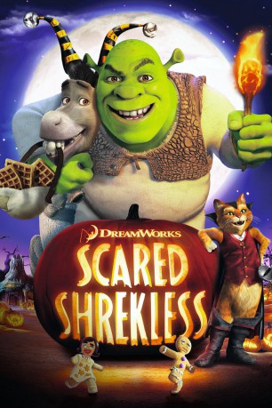

#6860 Er-Shrek dich nicht!
Alternativ: Scared Shrekless
 
 IMDB-Wertung: 6.8 / 10
IMDB-Wertung: 6.8 / 10  Metascore: 0
Metascore: 0 
An Halloween versuchen Shreks Freunde, der gestiefelte Kater, der Esel und die Anderen, ihn, Fiona und die Familie zu erschrecken. Allerdings haben die Oger die selben Pläne und wollen ihrerseits den Freunden einen Schrecken einjagen. Da auf diese Weise keine Einigkeit zwischen den Freunden hergestellt werden wird, soll ein Gruselgeschichtenwettbewerb herausfinden, wer den Anderen besser eine Gänsehaut verpassen kann.
Jahr: 2010
Dauer: 26 Minuten
FSK: 0
Land: USA Studio: DreamWorks StudiosTonspuren: DD2.0 - ,
Untertitel:
Auflösung: 720p (1280x720) Größe: 584 MB
Genre: Horror, Komödie, Abenteuer, Fantasy, Animation/Trick, Familie, Kurzfilm
Regisseur: Gary Trousdale, Raman Hui
Drehbuch: Gary Trousdale
Soundtrack:
Darsteller:
Datei: X:\Kinder Collections\Shrek\Er-Shrek dich nicht! (2010, FSK0, 1280x720).mkv seit 04.09.2017
Festplatte: Kinder-Filme+Trick
 Es gibt insgesamt 13 Filme in der Gruppe 'Kinder Collections\Shrek'
Es gibt insgesamt 13 Filme in der Gruppe 'Kinder Collections\Shrek'